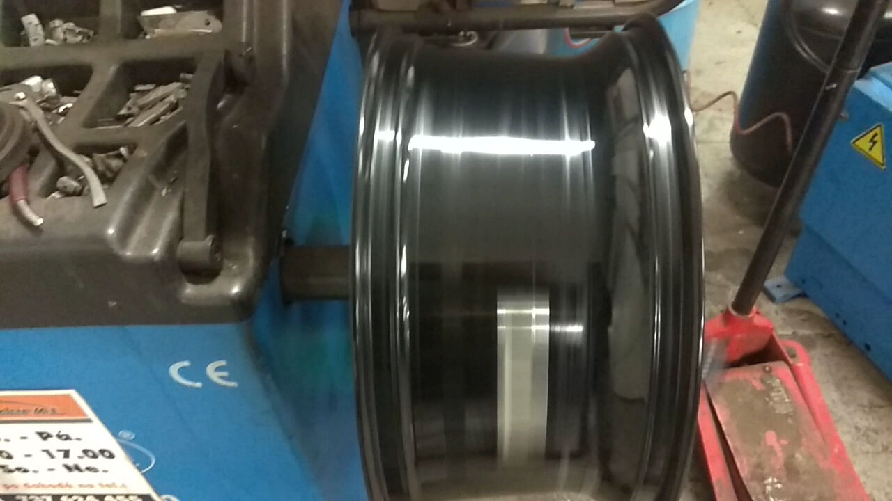

O nás
Od roku 2011 v Mariánských Lázních
Jaroslav Praizler a jeho tým. Dílna u nádraží, kde vám auto opraví a ještě vysvětlí proč.
Příběh
Začalo to jednou dílnou a jedním klíčem
Jaroslav Praizler otevřel servis v březnu 2011. Dnes má AutoPraizler M.L. tři dílny v ulici U Mlékárny, pneuservis, karosárnu a tým lidí, kteří tu pracují roky.
Většina zákazníků k nám chodí opakovaně. Jezdí k nám místní, firmy s dodávkami i lidé, kterým se rozbilo auto na dovolené v lázních. Z toho máme největší radost: že nás doporučují hotelové recepce i sousedi.
Naším cílem je dlouhodobá spokojenost zákazníka. Ne jedna velká faktura, ale auto, které jezdí, a zákazník, který se vrátí.

Jak pracujeme
Tři věci, na kterých si zakládáme
Řekneme to srozumitelně
Co je rozbité, proč, co je nutné opravit teď a co může počkat. Bez odborného mlžení. Když to jde, ukážeme vám starý díl.
Cena dopředu
Před opravou víte, kolik zaplatíte. Když během práce narazíme na něco dalšího, zavoláme a domluvíme se. Nic se neopravuje bez vašeho souhlasu.
Rychle, ale pořádně
Drobnosti na počkání, běžné opravy do druhého dne. Používáme díly značek Bosch, ATE, SKF, Sachs, LUK, Gates nebo Mann, srovnatelné s originálem.
Dílna a vybavení
Tři dílny, moderní technika
- Zvedáky pro osobní auta i dodávky, vjezd do výšky 3,3 m
- Diagnostika řídicích jednotek pro většinu značek
- Plně automatická plnička klimatizací TEXA
- Vyvažovačka a zouvačka pneumatik, měření geometrie
- Karosárna a lakovna s mícháním barev podle kódu



Čísla
Co o nás říkají čísla
Jaroslav Praizler, majitel
„Jsme tu pro vás už 15 let a takových zákazníků si nesmírně vážíme.“ Tak odpovídá na recenze a stejně to myslí v dílně. Na telefonu 728 920 290 se dovoláte přímo jemu nebo příjmu oprav.